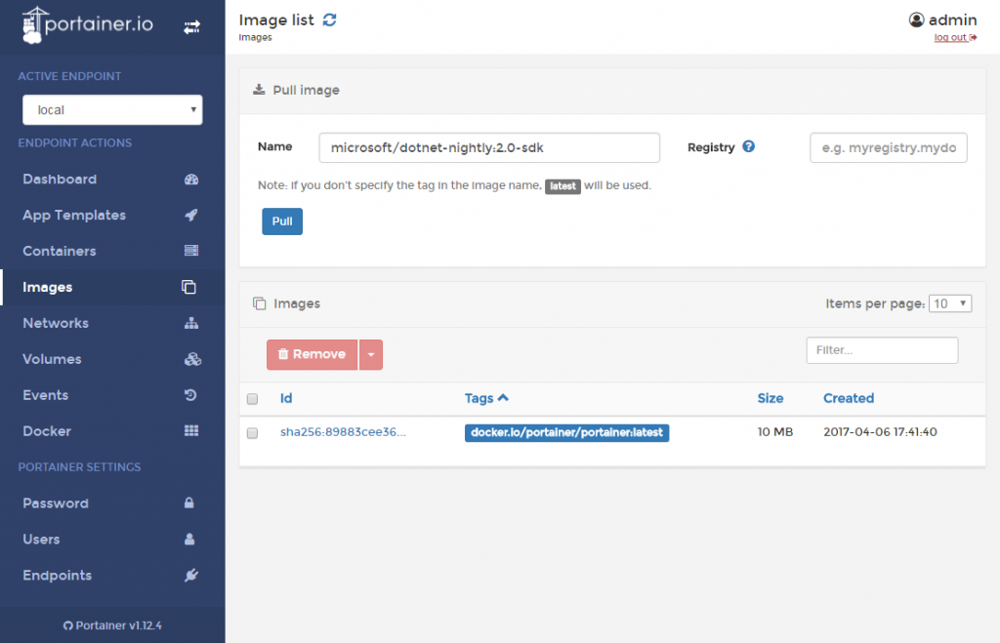
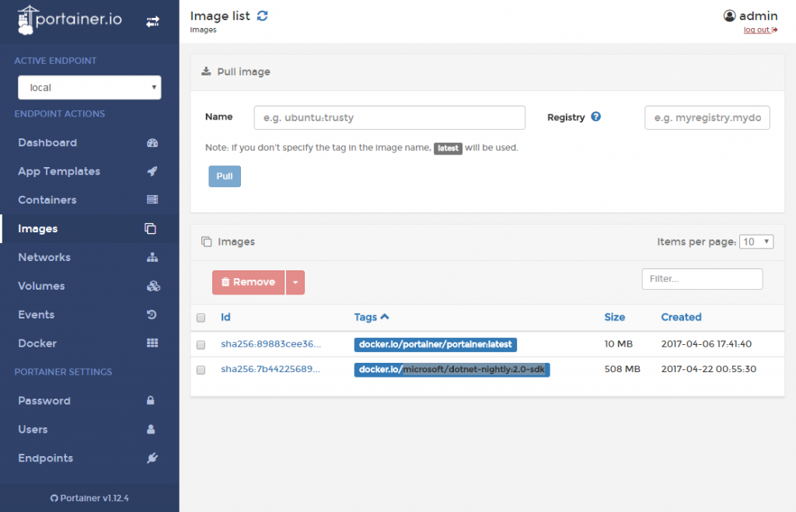
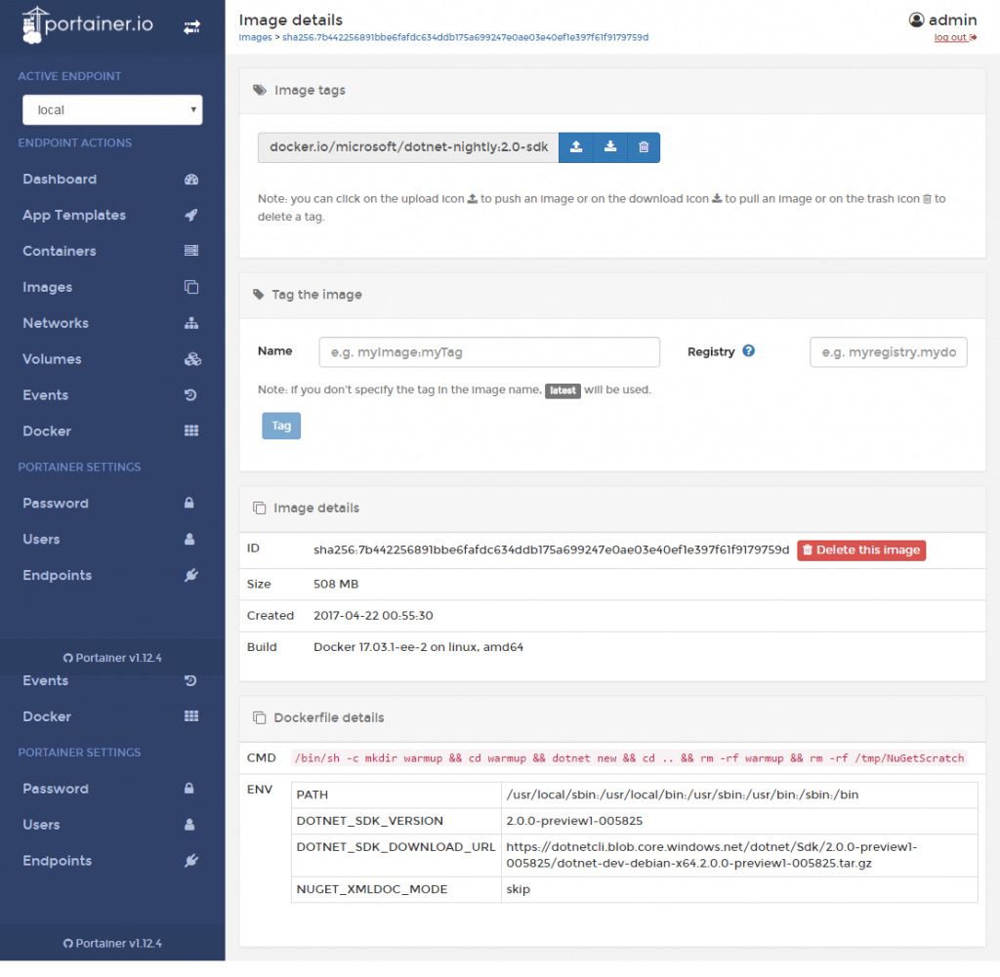
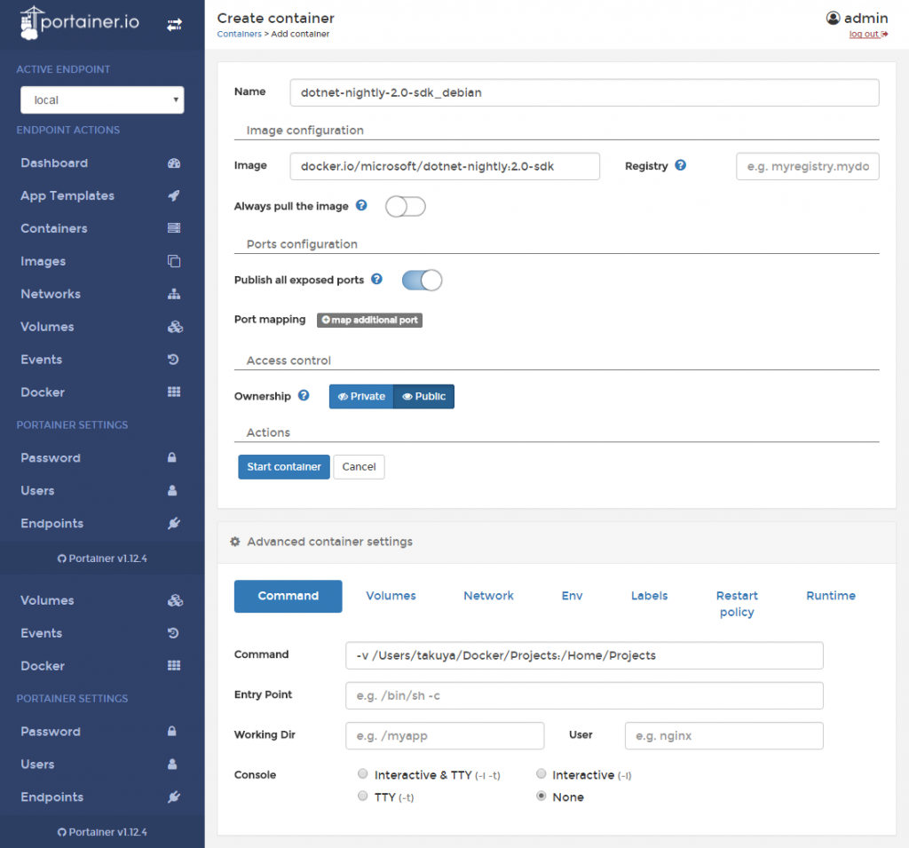
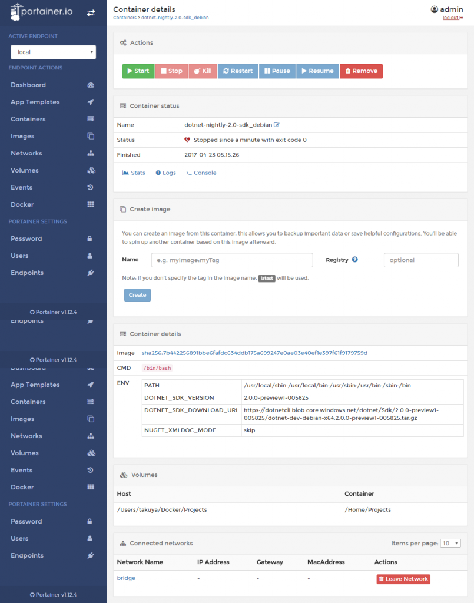

Introduction
.NET Core 2.0 PreviewとVisual Studio Codeでコンソールアプリをつくる 準備&作成編にて、**.NET Core 2.0 Preview**を使って、コンソールアプリを
- Visual Studio Codeからデバッグ&実行
- コマンドプロンプトからビルド&実行
しました。
前回の目標に、Linuxでの実行がありましたので、宣言通り、Linuxで実行していきます。
Docker
今回は、Dockerを使って、Linuxでの実行環境を構築します。
開発メモ その51 Red Hat Enterprise Linux 7.2にPortainerをインストールするにて導入したPortainerによって、WebからDockerの管理ができるようになったので、それを使います。
Docker Imageの入手
.NET Core 2.0の入ったDocker Imageを引っ張ってきます。
PortainerのImagesを開きます。
Nameと書かれたテキストボックスにmicrosoft/dotnet-nightly:2.0-sdkと入力して。Pullボタンを押下します。
この表記は、DockerImage名:タグ名となっています。
今回は、microsoft/dotnet-nightlyから、debianの.NET Core SDK 2.0 Previewを持ってくるために、microsoft/dotnet-nightly:2.0-sdkと入力しました。
 回線環境にもよりますが、私の場合3-4分くらいでPullが完了し、下部の一覧に追加されているのがわかります。
 Idをクリックして詳細を見てみます。
詳しい情報を確認できます。

なお、Imaeg Tagsのdocker.io/microsoft/dotnet-nightly:2.0-sdkという文字列は次の作業で使用します。
{kind=link}
{kind=link}
{kind=link}
コンテナの作成
画面左のメニューからContainersをクリックし、Add containerをクリックします。

今回の入力内容は下記になります。
{kind=link}
入力項目名
説明
内容
Name
コンテナの名前なので自由に名前を付けることができます。
dotnet-nightly-2.0-sdk_debian
Image configuration
入力項目名
説明
内容
Image
コンテナのベースとなるImage。先ほどPullしたImage Tagです。
docker.io/microsoft/dotnet-nightly:2.0-sdk
Always pull images
コンテナ作成前にImageを常にPullするかどうか
off
Ports configuration
入力項目名
説明
内容
Publish all exposed portsランダムな値のポートをDockerに公開させるか
off
Port mapping
map addtional portをクリックしてポートのマッピングを設定できます。
複数設定可能。
なし
Access control
入力項目名
説明
内容
Ownership
privateにすると、Portainer上においてAdminとコンテナを作成した本人のみがコンテナを操作できます。
Public
Advanced container settings
Volume
入力項目名
説明
内容
Volume mapping
ホスト側のディレクトリとコンテナ側のディレクトリをマッピングします。
Bindをクリックすることでhostに入力できます。
container /home/Projects
host /home/takuya/Docker/Projects
Console
コンテナと対話するコンソールを指定します。
Interactive & TTY
Runtime
入力項目名
説明
内容
Privileged mode
コンテナ以外のホスト上のプロセスと同じレベルでホストへのアクセスを許可するかどうか
on
注意 1. 今回のケースのような実行環境を作りたい場合、ConsoleでNoneを指定すると、即座にコンテナが停止します。
2. Privileged modeがonでないと、ホストにマッピングしたディレクトリに何も書き込めません 入力後、ActionsのStart containerをクリックします。
成功すれば、下記のようなメッセージが、画面右上に表示されます。Container Started 65425079d33e4b10c91a627785d5035715a05e200b0c4e4ede591a3ed9e58e5d `作成後、詳細を確認できます。

今回はここまで。`
{kind=link}